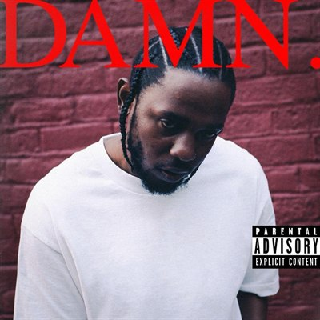
Kendrick Lamar
肯追啦吗
你好，我是
写诗词的人，也写短篇小说。
籍贯四川绵阳，毕业于绵阳中学。 爱好：阅读、诗词与短篇小说创作；喜欢研究中国哲学文化；爱看番，心中 TOP：《死亡笔记》、JOJO 系列； 爱玩单机游戏，尤其喜爱锈湖全系列，可点击 Rusty Lake（锈湖）官网 前往；计算机小白，正在努力学习ing……
控制台外的节拍。 我的网易云音乐主页

肯追啦吗
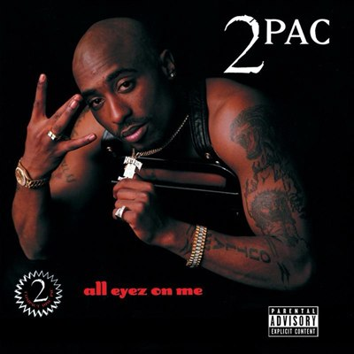
图派克
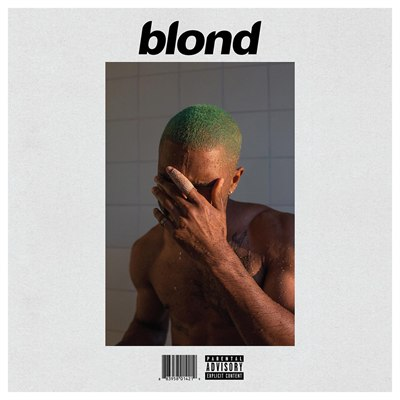
法海
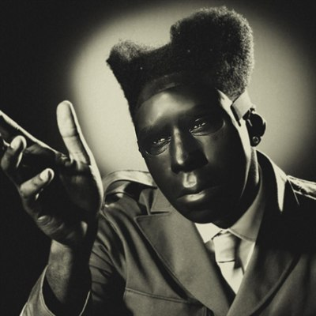
泰勒
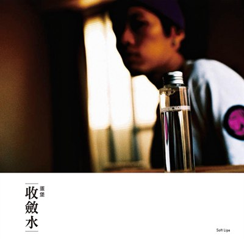
Soft Lipa
玛利亚凯莉
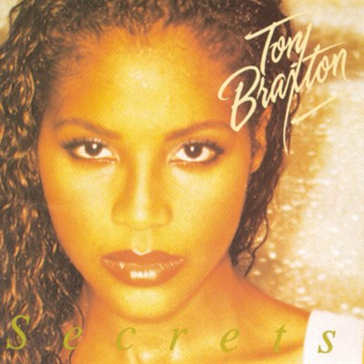
唐妮·布蕾斯顿
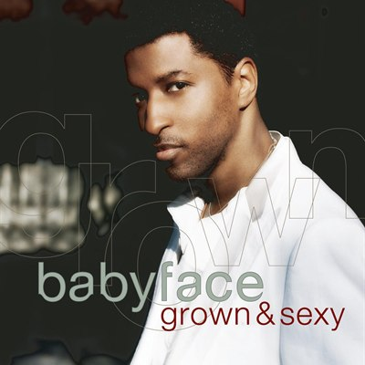
娃娃脸
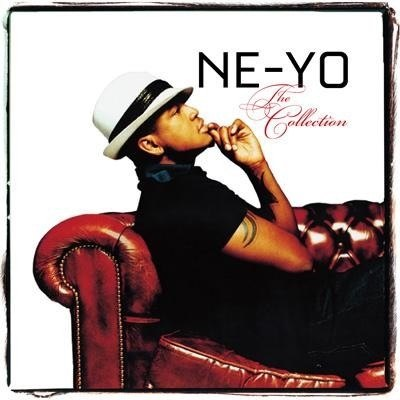
尼欧
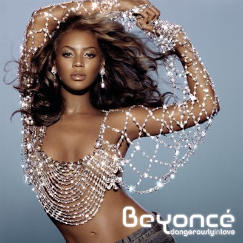
蓓昂斯
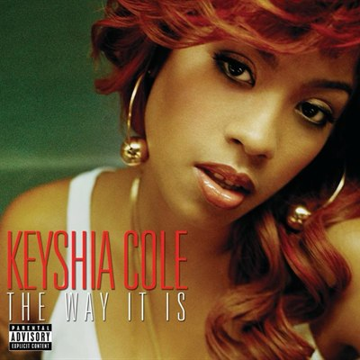
凯希亚·科尔
电脑随机生成 1-100 之间的数字，用户输入猜测数字，程序提示“大了”或者“小了”， 直到猜中，最后统计一共猜测多少次。单文件 Python 代码，可以使用命令行运行。
import random
def main():
"""猜数字小游戏：随机数在 1-100 之间，直到猜中为止。"""
answer = random.randint(1, 100)
count = 0
print("我已经想好了一个 1-100 之间的整数，来猜猜看吧！")
while True:
guess = input("请输入你的猜测（1-100）：").strip()
# 输入校验：必须是 1-100 的整数
if not guess.isdigit():
print("请输入 1-100 之间的整数。")
continue
guess = int(guess)
if not 1 <= guess <= 100:
print("范围是 1-100，请重新输入。")
continue
count += 1
if guess > answer:
print("大了")
elif guess < answer:
print("小了")
else:
print(f"猜中啦！答案就是 {answer}，你一共猜了 {count} 次。")
break
if __name__ == "__main__":
main()# 猜数字小游戏（Guess the Number）
一个用 Python 编写的命令行小游戏：程序随机生成 1-100 之间的整数，玩家反复输入猜测值，程序返回“大了 / 小了”，直到猜中并统计猜测次数。
## 功能
· 随机生成 1-100 的目标数字
· 输入非法时给出友好提示，不消耗猜测次数
· 每次猜测实时反馈“大了 / 小了”
· 猜中后统计总次数
## 运行方式
需要 Python 3.6 及以上版本，无需安装第三方依赖。
python guess_number.py## 示例
我已经想好了一个 1-100 之间的整数，来猜猜看吧！
请输入你的猜测（1-100）：50
小了
请输入你的猜测（1-100）：75
大了
请输入你的猜测（1-100）：63
猜中啦！答案就是 63，你一共猜了 3 次。## 可拓展方向
· 增加难度等级（改变数字范围）
· 限制最大猜测次数
· 记录历史最佳成绩
闲时落笔，记录心绪与见闻。
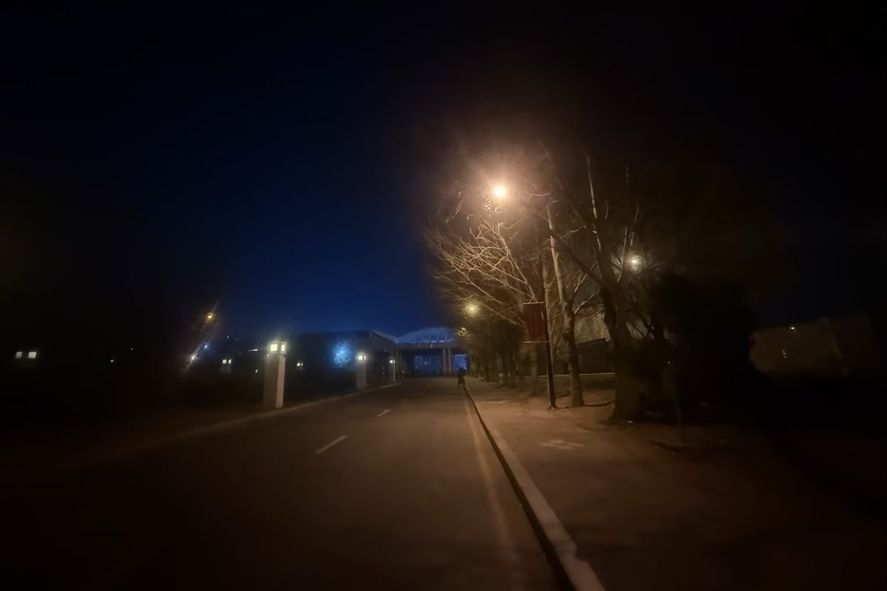
2025.11.07
朔风徙蹁，败叶纷翻，冷月孤悬。
蹑履青灯下，往事千端；情丝斩乱，尘网谁堪。
世路无穷，劳生有限，俗务销磨江郎难……
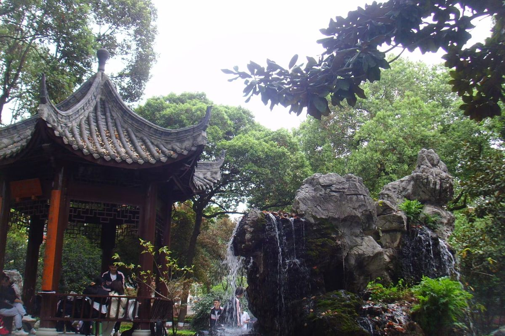
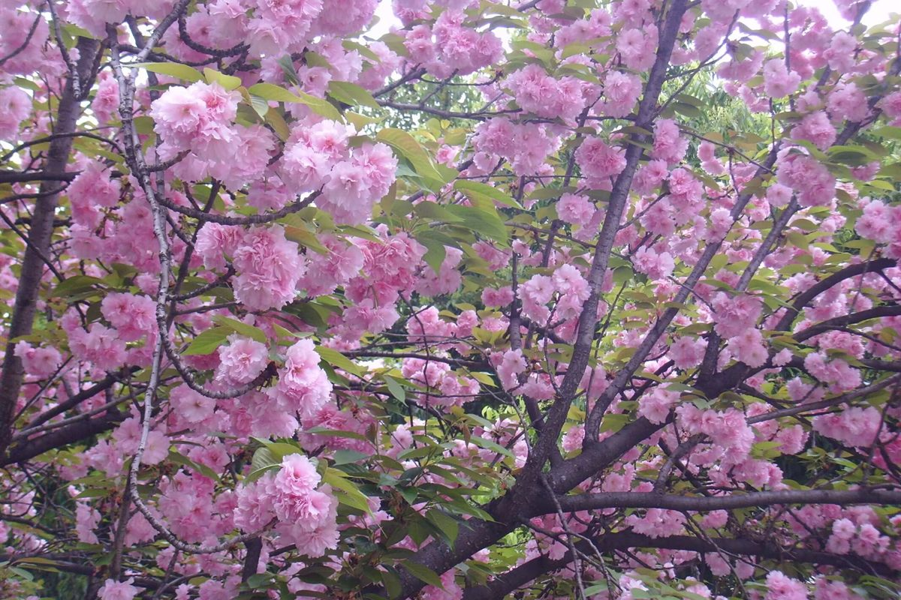
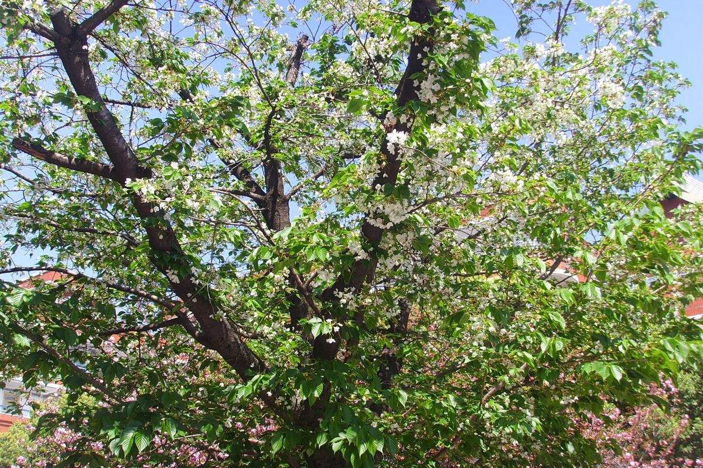
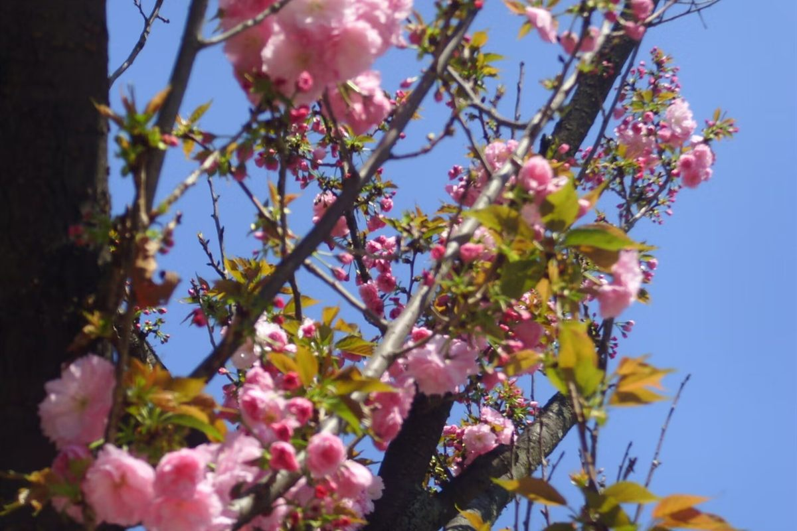
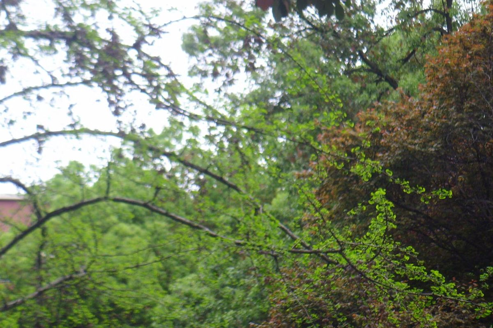
2024.4.6
清明微雨，绿烟朦胧，翠叶婆娑如瀑。
赭枝虬曲，玉兰蕊颤，粉樱枝头抱簇。
百鸟细啁啾，千蝶起蹁舞，万物皆甦……
2024.6.27
某个夜里，刚赶完作业的我准备摸黑洗衣服。走进盥洗室，一块小得可怜且稍有破损的镜子便映入眼帘…… 随着目光上移，我注视着镜中自己的双眼。这双已经被端详过无数次的眼竟在此刻生出一种不可言说的陌生感——就好像是来自另一个人的注视。
某个夜里，刚赶完作业的我准备摸黑洗衣服。走进盥洗室，一块小得可怜且稍有破损的镜子便映入眼帘，它固定在水龙头正对着的墙上——这意味着当你面对水龙头时是看不到镜子中的情形如何的。
我走到镜子前，用小手电微弱冰冷的光照着自己的脸以供细细端详：嘴唇、脸颊、鼻子……随着目光上移，我注视着镜中自己的双眼。这双已经被端详过无数次的眼竟在此刻生出一种不可言说的陌生感——就好像是来自另一个人的注视。莫名的恐惧从我身后的黑暗涌出——那双眼——我的眼——还在盯着……
我立刻转身，拒绝再面对镜子。
“神戳戳的。”我暗道。继而开始今晚的正事，洗衣服。
把手电固定好。冰冷的光线凝在因年久而瓷砖略发黄的洗漱台上，我的视野小而昏暗地亮着。打开水龙头，水声哗哗。黑夜静得无声，仿佛被扼住了咽喉，发声不得。只有刺耳的水声充斥在这逼仄一间。
抹肥皂、搓洗、冲水……单调地重复着。这种肢体动作上的单调引发了人思想上的活跃。说真的，我其实很讨厌在黑暗中使用手电照明。因为中心视野越亮，四周的黑暗也就愈发深不可测了。人一向惧怕未知。
思绪如林中野兽横冲直撞，毫无平静有序可言。我不住地想着——背对着镜子时，镜子中的我会转过来看我吗？面对这种无来由的荒诞想法，我不禁轻笑出声。都什么年代了，还在玩传统套路。
我略感轻松地转过身，面对镜子，再次用手电照着自己，却发现此刻镜中的自己竟呈现出一种目眦欲裂的可怖模样。我登时胆战心惊。“怎……么可能……?”我急忙将手抚上自己的脸，试图复原这该死的表情。可镜中人依旧是一副阴郁愤懑的样子，好似想要爬出来将我生吞活剥掉。
我再也无法故作镇静了。
不过很快一条妙计出现在我脑中。
我压下心中恐惧，上前一步，紧紧注视着镜中人——就像TA对我所做的。
“你想代替我……”话还未毕，镜中人的表情似乎多了一丝狂热与狰狞。
“想代替我来上这苦逼的高三吗？”
“那就来吧。”我接着说完。
闻言，镜中我的模样顷刻间恢复了正常。且无论我再怎么死盯镜中的自己，也再无异动了……
2023.10.21
他再也承受不住了。
他轻轻地放下作业，快步走出寝室，仿佛是下定了什么决心似的。此刻，他的眼前只有那极少数的，没有安装铁丝网的窗。
越来越近……他明白，生与死的界限即将淡出，可心里却是异常的平静。
他再也承受不住了。
他轻轻地放下作业，快步走出寝室，仿佛是下定了什么决心似的。此刻，他的眼前只有那极少数的，没有安装铁丝网的窗。
越来越近……
他明白，生与死的界限即将淡出，可心里却是异常的平静——没有撕心裂肺的哭喊、没有歇斯底里的暴怒、也没有绝望至极的悲恸。
——有且仅有的，是沉默。至于那些情感，早就在发作过后，又无助地归于死寂，再也发不出一点声响。
终于，他站在了窗户边缘，如他所无数次设想过的场景一样。
此时大家都去吃午饭了，人很少。
深秋的风将他拥入怀中，温暖中却又夹杂着阵阵寒意，是冬的预兆。他怔望着那冷而硬的地面好一阵，想象着自己在地面上炸开的样子，双腿不禁微微颤抖起来，细密的冷汗自皮肤沁出，默如止水的心竟又泛起些涟漪……可他脑中又如走马灯似的疯狂涌入那些痛苦压抑到足以令人崩溃的回忆。
涟漪又归于平静了。
于是，他以一种近乎贪婪的目光深深看了这脚下的校园，神情复杂。霎时，一只黑色蝴蝶飞入他的眼帘，它在低空盘旋着，翅膀上的花纹神秘而华丽。
“真漂亮。”他叹道，“但那又有什么意义呢？”他深吸一口气，闭上双眼。
“去他妈的。”
随着一声巨大的闷响，四处林鸟惊散纷飞。而后世界又立马归于平静，好像什么都没发生过；他的所有意识于冰冷地面上蔓延至凝固的鲜血中消逝，再无反应。
此时正是午间，秋风微爽，阳光明媚。
那只黑色的神秘蝴蝶也悠悠地，不知飞往何处去了。
*
上午最后一节的下课铃一响，她就如往常一般，带上上午的作业，直奔寝室。
她不吃午饭的原因有二：一是可以节省出更多的学习时间；再者可以省下一笔午饭钱——她的家境拮据，再加之是个女孩，能继续高中学业对她来说已是莫大的恩赐了，所以她拼了命的学习，唯恐父母收回成命。
她快步走出教学楼，注意到一只通体黑色的蝴蝶在空中低低盘旋，翅膀上的花纹神秘而华丽。
“真漂亮。”她叹道，“但那又有什么意义呢？
“我还要赶快写作业呢。”她头也不回地离开了。
*
还没经过男生宿舍，远远地，她竟听见一声巨大的闷响。这太不寻常了，她脑子里顿时闪过一个不可能但又十分可能的答案，可又像是不愿承认似的，急忙摆了摆头，想把脑子里的推测甩开——但是她发现她做不到——特殊的时间、特殊的地点和特殊的声音……
怎么看都像是有人……了
随即的状况很遗憾地证实了她的想法：从宿舍楼里跑出来的宿管、赶来的校警和几个老师之类的大人立马围起来了一块地方，并且驱赶着围观的学生们。
此时大家已陆陆续续吃完了午饭，人越来越多了。
她此时却已被麻木取代了不安，反倒是一心想回去写她的作业。“跳楼嘛，再正常不过的事了。”她这样想着，一面快步挤出人群，将一堆呼天抢地的人抛在背后。
她一回到宿舍就开始写作业，舍友们也陆续回来了，显然正对那件事大谈特谈。
“高年级的还没跳，低年级的就先跳了？”
“跳一个人会放双休吗？”
“吓死人了，这也太晦气了。”
“无所谓，又不是第一次发生这种事了。”
……
她充耳不闻，尽力让自己的注意力集中在作业上。舍友们仍喋喋不休直至铃响，才意犹未尽的闭上了嘴。
下午出宿舍时，学生们的目光不由得一致地望向某个地方——尽管那地方已是干干净净，好像什么都没发生过。
她仍是目视前方，脚步和眼神没有作一丝一毫的停留。
无处可看，她竟鬼使神差地望了一眼天空。天光大好，林鸟静憩——唯独有一只熟悉的黑身蝴蝶仍在低低盘旋，似在亲吻学生们的头顶。
她脑中一直紧绷的某根弦突然没来由的断掉了。
她再也控制不住自己，居然蹲在地上嚎啕大哭起来……
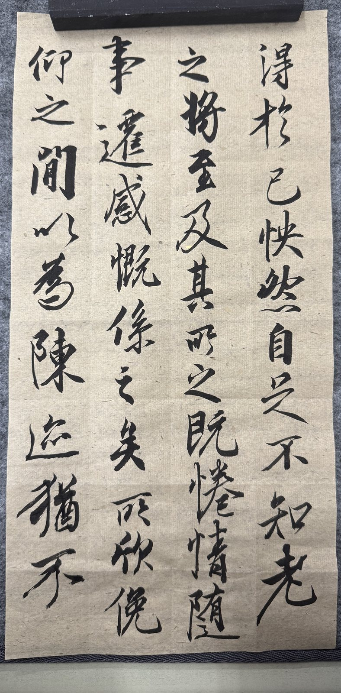
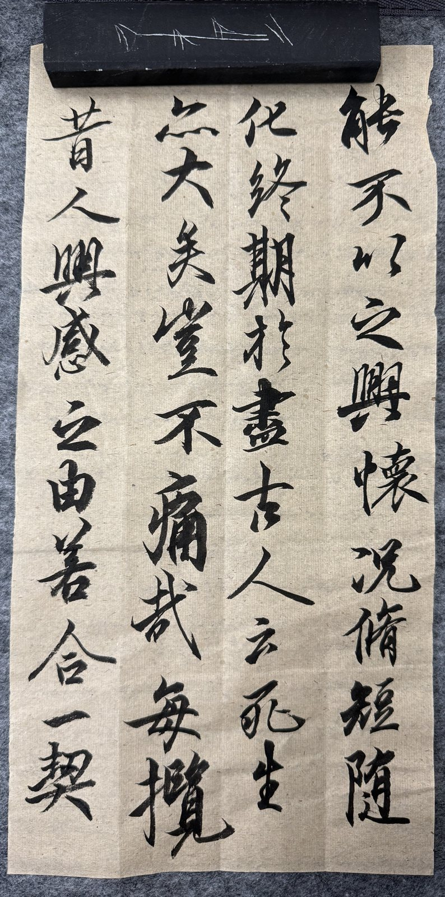
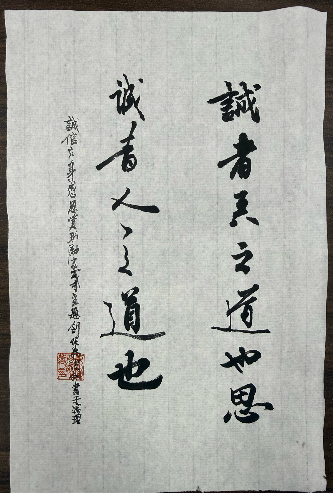
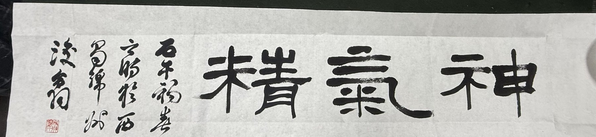
爱拍一些猫猫狗狗...（熊猫也算猫 hhh）
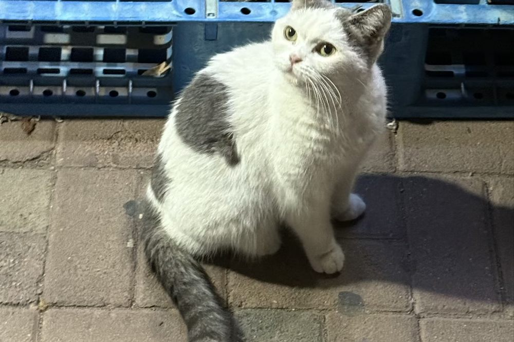
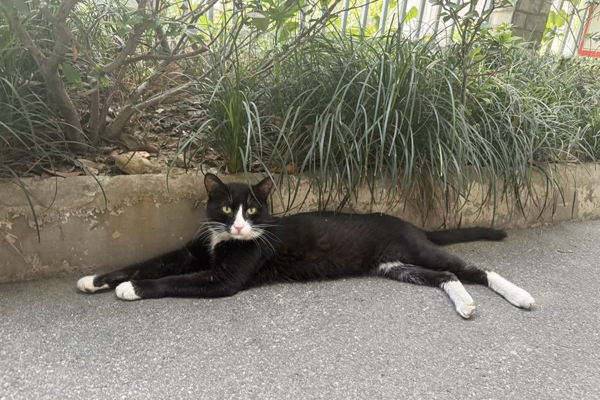
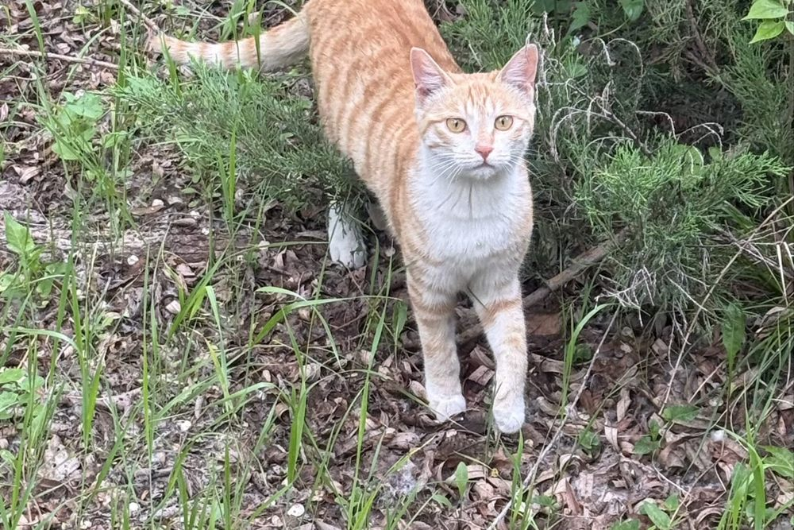
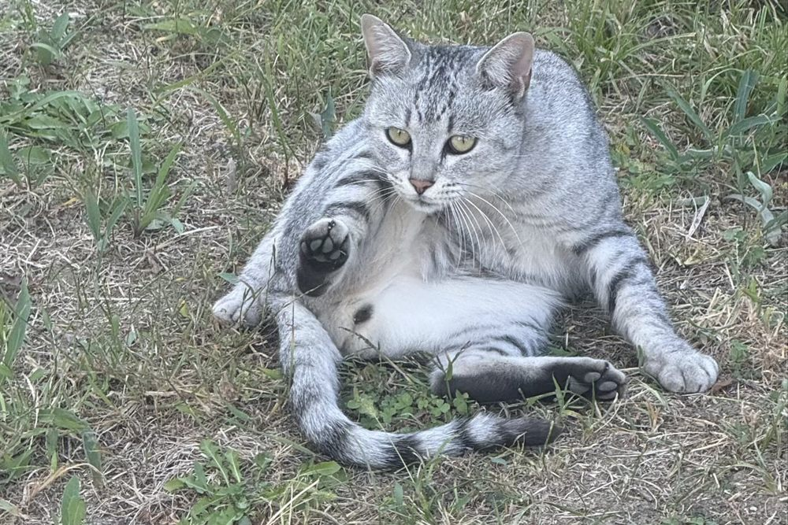
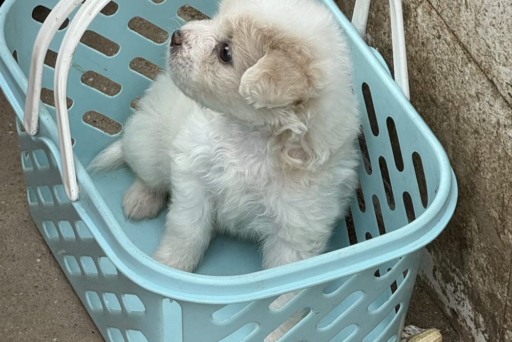
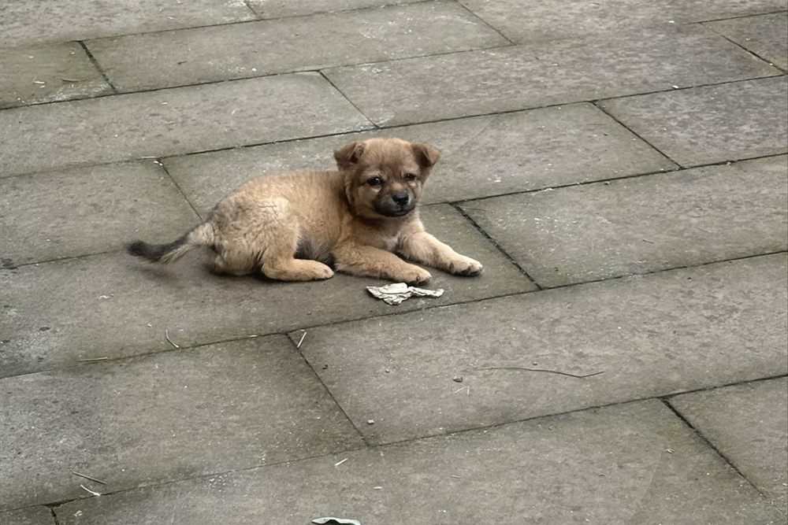
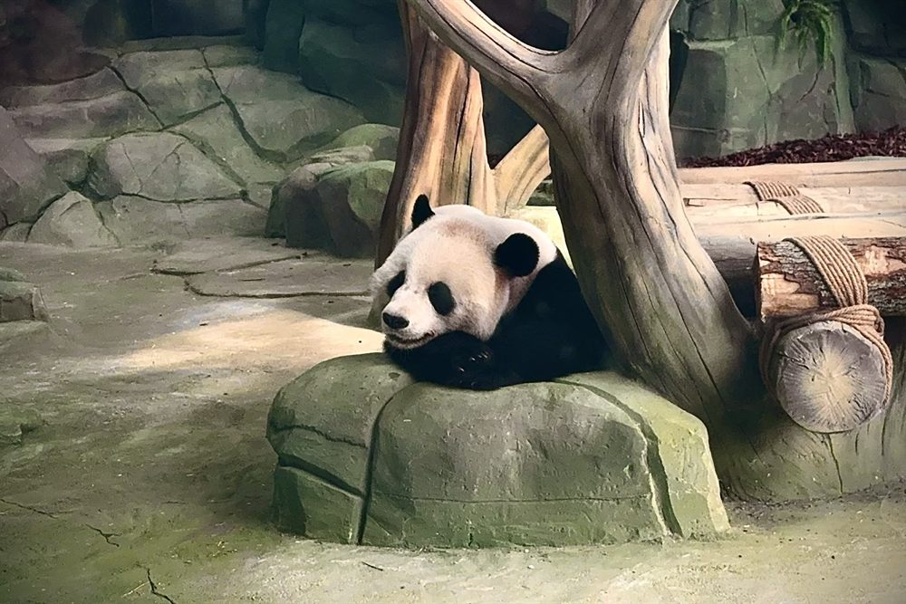
日常用得上的几个站点，点一下直接跳转。
点击任意处即可进入我的主页